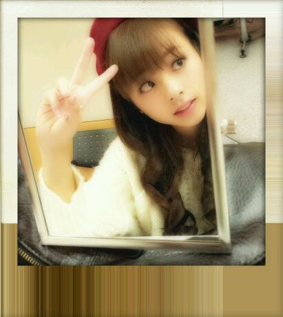
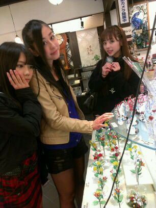

ほっほぉ〜ぃ♪
ろってぃ-だよ*´ω`*
今日は美容院に行ってきました´∇`)ノ
美容院に行くの
大好きだぉ。♪
その後は、お仕事☆
今日もめちゃメンバーに
会えたわ・ω・))
わぁ〜い \ ( ´∇`) /
そしてそしてっ)))
『制服のマネキン』のPV☆
見やしたかあ!?
．．．
後ろにも
チューモクチューモク
♪♪にっ V
しょっぱな
一番前のセンターいる
人間は まひろですよ・∇・)!
よかったら、
いやっ 是非是非
チェックお願い致します...(〃ω〃)
ペコリ。
PVはまひろ
グレーのセーター着てるよ^_^
アンダーメンバーも2列に
並んでいて
まひろは1例目の
皆様の方から見て
センターわれの左側だよん♪
ねねがセンターで
ねねの隣にいます /
見つけてみてね=・ω・=♪

いぇいっ♪
ってな感じで
この写真は
ひな、ちはる、まひろ。

まひろ、ガラスでできた
くじゃくもってんねん*^^*
おやすみなさい...(〃_〃)